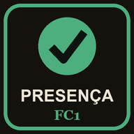

Trilhas de Aprendizagem são percursos de estudo construídos para orientar, apoiar e avaliar a sua caminhada pelo mundo da Física.
O projeto executivo, o detalhamento do método e a contribuição da música instrumental durante o estudo estão nas abas da lateral esquerda.
Escolha uma trilha e faça os objetos de aprendizagem na ordem numerada, sem pular nenhum — a ordem segue como o cérebro aprende. Se pulou, volte.
Sucesso no seu estudo.
Pré-Aula · em casa, antes da aula
Aula · no encontro presencial, com o professor
Pós-Aula · a partir do mesmo dia da aula
